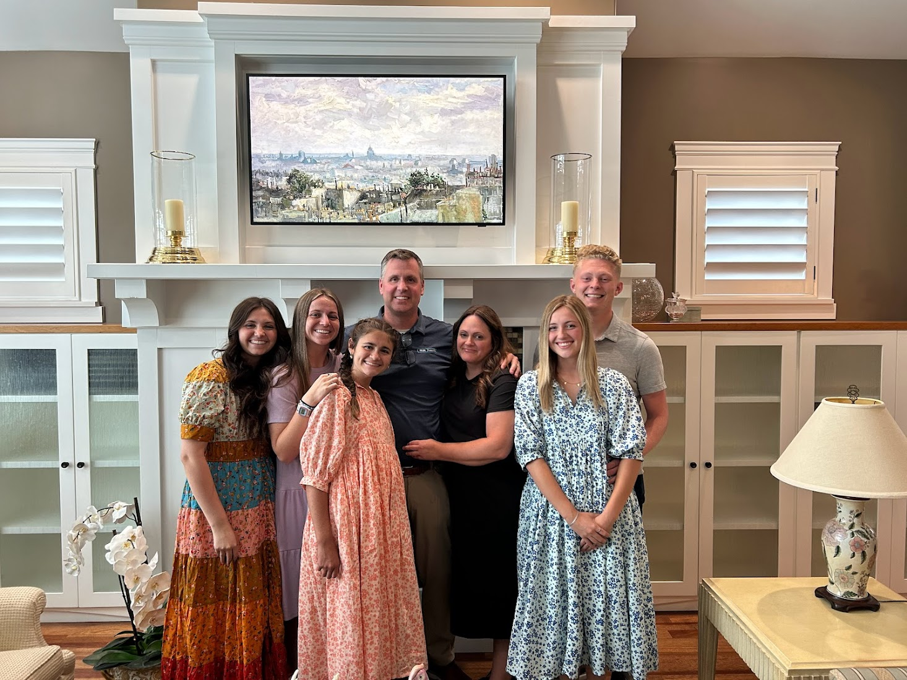

More about Rachel

- Important things to me:
-
- I love my family
- I have the greatest Friends
- I know that I am a daughter of God
- Hobbies
- I love being outdoors
- I love to play pickleball
- I love to go for runs
- Family
- My parents, JR and Karen are the best
- ELizabeth is married to Alex and they have a baby on the way
- Hannah is on a mission and is doing amazing
- Sarah is the sweetest 13 year old you will ever meet